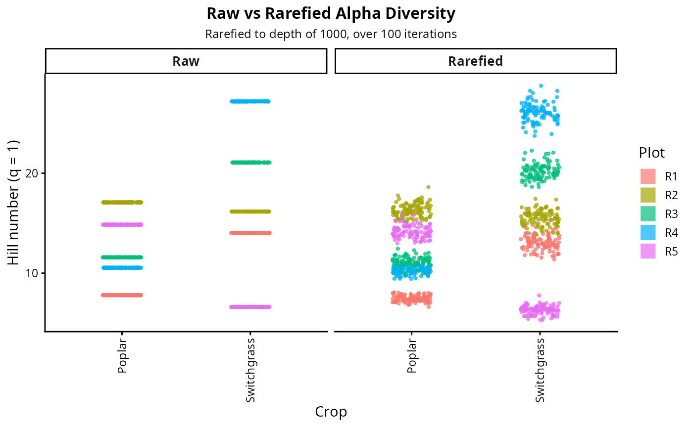

Variance propagation diagnostic for rarefaction
Source:R/plot_variance_propagation.R
plot_variance_propagation.RdThis function evaluate the variance generated during multiple rarefaction by plotting comparing raw vs. rarefied alpha diversity metrics calculated at each iterations. It is possible to plot observed richness (q=0), Shannon diversity (q=1), or Simpson diversity (q=2) by setting the q parameter to "richness" or q = 0, "shannon" or q = 1, or "shannon" or q = 2. The plot is faceted by method (raw vs rarefied) and colored by a specified grouping variable from the sample data.
Arguments
- physeq_obj
Raw phyloseq object
- rarefied
Output from multi_rarefy(). Either a list of dataframes or and array.
- q
Hill number order (q = 0 for richness, q = 1 for Shannon, q = 2 for Simpson)
- group_var
A grouping variable to use gor grouping as in the sample_data()
- group_color
A color variable to use present in the sample_data()
Examples
# \donttest{
library(phyloseq)
library(BRCore)
# Example using the bcse dataset, comparing hill q=1 between Poplar and Switchgrass plots
bcse_filt <- bcse |>
subset_samples(Crop %in% c("Poplar", "Switchgrass"))
bcse_rarefied_otutable_filt <-
multi_rarefy(
physeq_obj = bcse_filt,
depth_level = 1000,
num_iter = 100,
.as_array = FALSE,
set_seed = 7643
)
#>
#> ── Multiple Rarefaction ────────────────────────────────────────────────────────
#>
#> ── Input Validation ──
#>
#> ✔ Input phyloseq object is valid!
#> ℹ Seed: 7643
#> ℹ Input (matrix/df dim): 10 samples x 2861 taxa
#> ℹ Rarefaction depth: 1000
#> ℹ Iterations: 100
#> ℹ taxa_are_rows: TRUE
#> ℹ OTU matrix/df rownames head: bcse73, bcse102, bcse104, bcse77, bcse78, bcse75
#> ℹ OTU matrix/df colnames head: OTU_427, OTU_11, OTU_253, OTU_148, OTU_3, OTU_78
#> ℹ Row sums summary: Min=3146, Max=67815, Median=8685.5
#>
#> ── Rarefaction Results ──
#>
#> ── Sample Removal
#> ✔ No samples removed.
#>
#> ── Taxa Removal
#> ℹ Original taxa input: 2861
#> ! Max: 2688 taxa removed (zero abundance) in viable samples (depth_level >= 1000).
#> ! When using `.as_array = FALSE`, taxa removed may differ across iterations.
#>
#> ── Data Sparsity
#> ℹ Returning list of data frames for each iteration.
#> • Rarefied matrix (across 100 iterations):
#> • Min: 1145 zeros (66.18% sparsity) out of 1730 entries
#> • Max: 1483 zeros (70.96% sparsity) out of 2090 entries
#> • Avg: 1336.3 zeros (69% sparsity) out of 1936.6 entries
#>
#> ── Final Data Dimensions
#> ✔ Output: 100 iterations with 10 unique samples
#> • Samples per iteration:
#> • Min: 10
#> • Max: 10
#> • Non-zero taxa per iteration:
#> • Min: 173
#> • Max: 209
#> • Avg: 193.7
plot_variance_propagation(
physeq_obj = bcse_filt,
rarefied = bcse_rarefied_otutable_filt,
q = 1,
group_var = "Crop",
group_color = "Plot"
)
#> ✔ Input phyloseq object is valid!
#>
#> ── Rarefaction Variance Propagation Visualization ──────────────────────────────
#> ℹ Hill number order selected, q= 1
#> ℹ Number of rarefaction iterations, n_iter= 100
#> ℹ Comparison plot generated!

# }